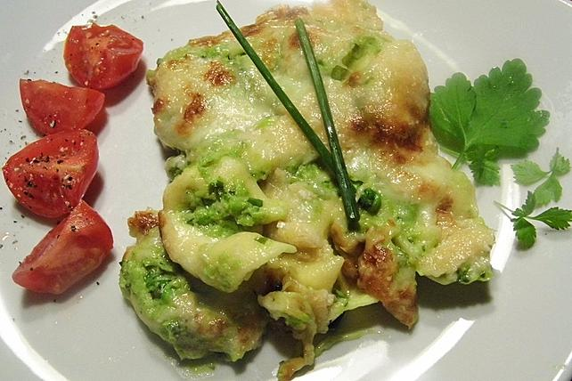

Tortellini Erbsen Auflauf
Zutaten für
| 400g Tortellini, frische, mit Ricotta- oder Fleischfüllung |
| 2 kl. Dose/n Erbsen |
| 2 Becher Sahne |
| 2 Kugeln Mozzarella |
| 400g Parmesan, gerieben |
| Salz |
| Pfeffer |
| Schnittlauch |
| Petersillie |
Zubereitung
Die Tortellini sollten in gesalzenem Wasser für etwa 2 Minuten gekocht werden und danach gründlich abtropfen gelassen werden. Den Backofen auf 180-200°C (Ober- und Unterhitze) vorheizen. Die Erbsen und die Sahne werden in ein Gefäß gegeben und anschließend püriert. Mit ausreichend Salz und Gewürzen wie Pfeffer, Petersilie und Schnittlauch abschmecken. Die gekochten Tortellini werden in eine Auflaufform gegeben. Die pürierte Erbsenmischung wird darüber gegossen und die Tortellini gleichmäßig damit bedeckt. Anschließend den in Scheiben geschnittenen Mozzarella gleichmäßig darauf verteilen und den Parmesan darüber streuen. Die Auflaufform wird dann in den vorgeheizten Ofen gestellt und für etwa 25-30 Minuten gebacken, bis der Käse eine goldbraune Kruste gebildet hat.
Rezept erstellt von

Niklas Gläser